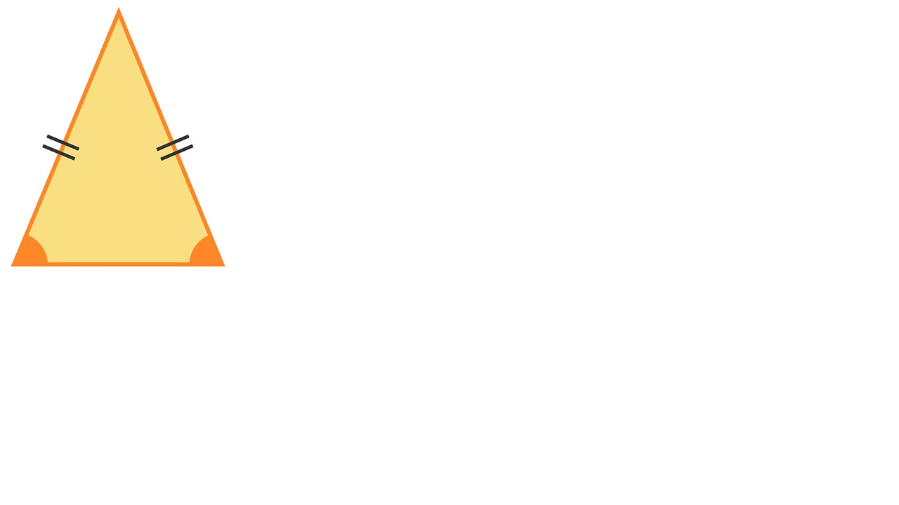

Triángulo Isósceles
Los triángulos isósceles tienen dos ángulos iguales y uno diferente. Esto hace que tengan dos lados iguales y uno diferente también. El lado que es distinto es precisamente el que está entre los ángulos iguales.
Características del triángulo isósceles
Todo triángulo isósceles tiene 2 lados completamente iguales, y uno desigual.
Dos de los ángulos interiores que forman el triángulo isósceles tienen la misma amplitud. Y uno de ellos, es diferente. Si quieres profundizar un poco más en este concepto, te recomendamos que visites nuestro post acerca de los diferentes tipos de ángulos.
La suma de todos los ángulos de un triángulo isósceles suman 180º.
